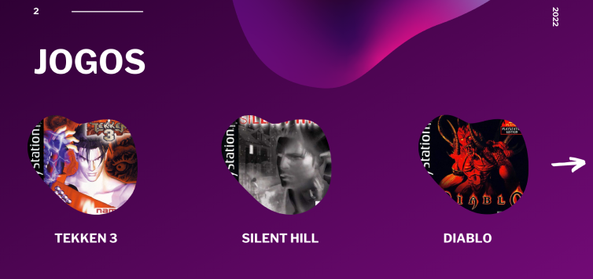

BEM-VINDO,
Ao emulador de PlayStation 1, ESPX-1.
Este emulador foi desenvolvido por Henrique Pereira Santos, sou desenvolvedor de Software a 12 anos, com o foco maior sempre em desenvolver jogos de alta perfomace e qualidade.
A função do emulador ESPX-1 foi feita com propósito de você ter aquela nostalgia de jogos únicos e verdadeiros. Feito com a máxima qualidade e sempre com qualidade.
A imagem ao lado mostra o menu inicial do emulador ESPX-1.
Agora, está imagem representa o menu de seleção de jogos.
E por fim, a imagen ao lado representa a tela de créditos do criador do emulador.
Como entrar em contato?
discord.gg/ESPX-1